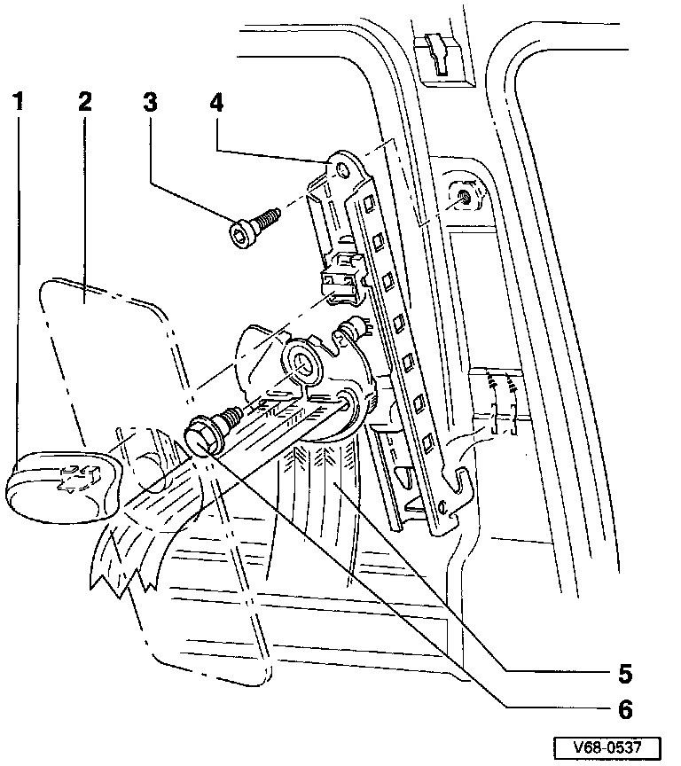

Belt Height Adjustment
Vehicles With Airbag:
1 - Seat belt height adjustment control
- Pull out
2 - Slide
3 - Socket-head screw
- Torque to: 23 Nm (17 ft lb)
4 - Belt height adjustment fitting
- Front: To remove, upper B-pillar trim must be removed first
- Rear: To remove, side parcel shelf support and C-pillar trim must be removed first
5 - Seat belt
6 - Threaded pin